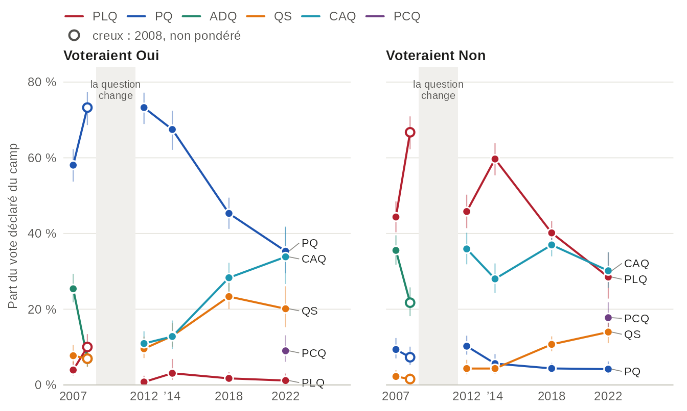
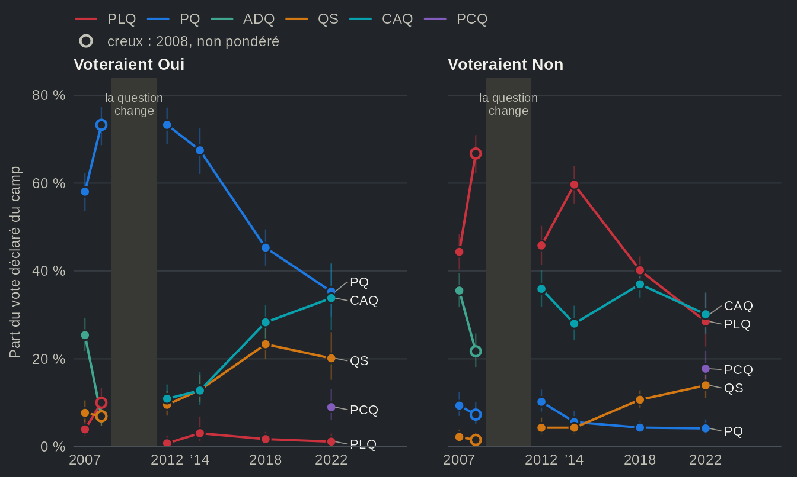

Deux dimensions de la concurrence : souveraineté et gauche-droite
Source:vignettes/articles/fr-dimensions.Rmd
fr-dimensions.RmdPendant une quarantaine d’années, la question nationale a structuré la concurrence partisane au Québec. Le Parti québécois (PQ) portait le projet souverainiste, le Parti libéral du Québec (PLQ) défendait le fédéralisme, et la position d’un électeur sur l’indépendance permettait de prévoir en bonne partie son vote (Bélanger et al., 2018). La montée de la Coalition avenir Québec (CAQ) et de Québec solidaire (QS), puis la victoire de la CAQ en 2018, ont brouillé ce portrait. Selon une croyance désormais répandue, dont témoignent les travaux récents sur le nouveau système partisan (Bélanger et Mahéo, 2020 ; Bélanger et al., 2022), l’axe souverainiste s’est estompé et un axe gauche-droite a pris sa place, le PQ se trouvant coincé entre un parti nationaliste qui a mis le référendum de côté et un parti souverainiste de gauche. Dans cette page, nous examinons si les Études électorales québécoises confirment cette lecture. La question nationale a-t-elle cessé de structurer le vote des électrices et des électeurs du Québec, et l’axe gauche-droite a-t-il pris le relais ?
Notre verdict est ambivalent. D’une part, la question nationale structure beaucoup moins le vote. En 2012, le choix partisan était lié à 57 % de la variation du vote référendaire (savoir pour quel parti un répondant avait voté nous apprenait 57 % de ce qu’il y avait à savoir de son vote référendaire) ; en 2022, à 25 %. D’autre part, l’axe gauche-droite n’a pas pris le relais : le choix partisan était lié à 26 % de la variation de l’autopositionnement gauche-droite en 2012 et à 23 % en 2022. Si l’on met de côté les électeurs du Parti conservateur du Québec (PCQ), qui est passé de 1,5 % des votes en 2018 à 12,9 % en 2022, cette part tombe à 14 %. Autrement dit, la question nationale a perdu du terrain sans être remplacée. Elle sépare pourtant toujours aussi nettement les deux partis historiques : en 2022, 82 % des électeurs du PQ auraient voté Oui, contre 2 % de ceux du PLQ.
Nous utilisons trois questions posées, sous une forme semblable, dans chaque Étude électorale québécoise de 2012 à 2022 : le vote déclaré après l’élection, le vote à un référendum sur l’indépendance et l’autopositionnement de la personne sur une échelle gauche-droite, de 0 (gauche) à 10 (droite). La langue maternelle permet d’examiner les francophones séparément. Dans les Études électorales québécoises utilisées ici, la question référendaire remonte à 2007 ; la deuxième figure commence donc à cette date. La fin de la page montre comment reproduire les figures.
Les pôles ont tenu, les nouveaux venus se sont rapprochés
![Deux graphiques linéaires, de 2012 à 2022, une ligne par parti (PLQ, PQ, CAQ, QS ; le PCQ en 2022 seulement) : à gauche la part des électeurs du parti qui voteraient Oui à l'indépendance, à droite leur autopositionnement gauche-droite moyen, avec intervalles de confiance. Les électeurs du PQ passent de 84 % à 82 % de Oui ; ceux de la CAQ, de 19 % à 38 % ; ceux de QS, de 63 % à 44 %. Les électeurs du PLQ passent de 6,5 à 4,8 sur l'axe gauche-droite ; ceux de QS restent les plus à gauche, à 3,7 en 2022. Valeurs dans la vue en tableau.](fr-dimensions_files/figure-html/paths-light.png)
![Deux graphiques linéaires, de 2012 à 2022, une ligne par parti (PLQ, PQ, CAQ, QS ; le PCQ en 2022 seulement) : à gauche la part des électeurs du parti qui voteraient Oui à l'indépendance, à droite leur autopositionnement gauche-droite moyen, avec intervalles de confiance. Les électeurs du PQ passent de 84 % à 82 % de Oui ; ceux de la CAQ, de 19 % à 38 % ; ceux de QS, de 63 % à 44 %. Les électeurs du PLQ passent de 6,5 à 4,8 sur l'axe gauche-droite ; ceux de QS restent les plus à gauche, à 3,7 en 2022. Valeurs dans la vue en tableau.](fr-dimensions_files/figure-html/paths-dark.png)
Source : Études électorales québécoises de 2012, 2014, 2018 et 2022, pondérées. Vote déclaré après l'élection ; vote référendaire parmi les répondants qui ont choisi Oui ou Non. Les partis sont côte à côte à chaque élection, et les deux panneaux ont leur propre échelle. Le PCQ n'était proposé comme réponse qu'en 2022.
Vue en tableau
| Parti | Élection | Étude | Gauche-droite, moyenne [IC à 95 %] | n (gauche-droite) | Oui, % [IC à 95 %] | n (Oui/Non) | Pondération |
|---|---|---|---|---|---|---|---|
| PLQ | 2012 | EEQ 2012 | 6,52 [6,24 ; 6,79] | 228 | 1,3 [0,4 ; 4,0] | 269 | pondéré |
| PLQ | 2014 | EEQ 2014 | 6,29 [6,01 ; 6,56] | 393 | 2,9 [1,3 ; 6,5] | 482 | pondéré |
| PLQ | 2018 | EEQ 2018 | 5,92 [5,68 ; 6,16] | 432 | 2,5 [1,3 ; 4,8] | 477 | pondéré |
| PLQ | 2022 | EEQ 2022 | 4,80 [4,19 ; 5,42] | 140 | 2,2 [0,8 ; 5,7] | 141 | pondéré |
| PQ | 2012 | EEQ 2012 | 4,39 [4,16 ; 4,61] | 422 | 84,5 [80,4 ; 87,8] | 448 | pondéré |
| PQ | 2014 | EEQ 2014 | 4,67 [4,28 ; 5,06] | 289 | 87,4 [82,2 ; 91,3] | 299 | pondéré |
| PQ | 2018 | EEQ 2018 | 4,56 [4,33 ; 4,78] | 342 | 85,9 [81,6 ; 89,4] | 344 | pondéré |
| PQ | 2022 | EEQ 2022 | 4,52 [4,25 ; 4,79] | 204 | 82,0 [74,6 ; 87,6] | 174 | pondéré |
| QS | 2012 | EEQ 2012 | 3,11 [2,68 ; 3,53] | 89 | 62,6 [49,4 ; 74,1] | 87 | pondéré |
| QS | 2014 | EEQ 2014 | 3,41 [2,93 ; 3,88] | 118 | 63,4 [52,3 ; 73,3] | 110 | pondéré |
| QS | 2018 | EEQ 2018 | 3,70 [3,42 ; 3,98] | 302 | 56,2 [49,8 ; 62,4] | 280 | pondéré |
| QS | 2022 | EEQ 2022 | 3,66 [3,27 ; 4,05] | 207 | 43,8 [34,8 ; 53,2] | 171 | pondéré |
| CAQ | 2012 | EEQ 2012 | 6,29 [6,04 ; 6,55] | 261 | 18,8 [14,5 ; 24,0] | 298 | pondéré |
| CAQ | 2014 | EEQ 2014 | 5,68 [5,39 ; 5,98] | 223 | 21,0 [15,7 ; 27,4] | 244 | pondéré |
| CAQ | 2018 | EEQ 2018 | 6,00 [5,82 ; 6,17] | 601 | 31,0 [27,1 ; 35,3] | 574 | pondéré |
| CAQ | 2022 | EEQ 2022 | 5,55 [5,36 ; 5,74] | 351 | 37,8 [29,9 ; 46,4] | 300 | pondéré |
| PCQ | 2022 | EEQ 2022 | 6,73 [6,38 ; 7,07] | 143 | 21,5 [14,9 ; 30,1] | 137 | pondéré |
Deux constats s’imposent. D’abord, les deux pôles historiques n’ont pas bougé sur la question nationale. Les électeurs du PQ demeurent massivement souverainistes (84 % voteraient Oui en 2012, 82 % en 2022) et ceux du PLQ, presque unanimement fédéralistes (1 % et 2 %). Ensuite, les deux partis plus récents se sont rapprochés l’un de l’autre. La part de Oui chez les électeurs de la CAQ passe de 19 % en 2012 à 38 % en 2022, et celle des électeurs de QS, de 63 % à 44 %. La CAQ tire maintenant une bonne partie de ses appuis de souverainistes. Fait étonnant pour un parti souverainiste, une majorité des électeurs de QS (56 %) voteraient désormais Non. Précisons que l’estimation de 2012 ne repose que sur 87 répondants et que son intervalle est large (de 49 % à 74 %).
Sur l’axe gauche-droite, les mouvements sont plus modestes, à une exception près. Les électeurs de QS sont les plus à gauche à chaque élection (3,7 sur 10 en 2022) et ceux du PCQ, les plus à droite (6,7). L’exception est le PLQ : ses électeurs passent de 6,5 en 2012 à 4,8 en 2022. En 2022, ils se situent à gauche des électeurs de la CAQ (5,5), près de ceux du PQ (4,5). Cette estimation repose sur 140 répondants, et la question de 2022 avait un autre libellé (voir À propos des données) ; l’ampleur du déplacement est donc à prendre avec prudence. La droite de l’échiquier revient désormais à la CAQ et au PCQ. Notons cependant ce qui s’est passé entre les deux partis souverainistes. Leurs électeurs sont proches sur l’axe gauche-droite (un écart de 1,3 sur l’échelle de 0 à 10 en 2012, de 0,8 en 2022), alors que leur écart sur la souveraineté est passé de 21 à 38 points de pourcentage. Ce qui distingue aujourd’hui l’électorat du PQ de celui de QS, c’est davantage la question nationale que l’axe gauche-droite.
Les électeurs du Oui se partagent désormais entre trois partis


Source : Études électorales québécoises de 2007 à 2022, pondérées, sauf 2008 (creux : non pondérée). 2007 et 2008 ont posé la question référendaire de 1995, 2012 à 2022 une question sur un pays indépendant : les lignes s'interrompent au changement. Les autres partis (Parti vert, Option nationale et autres) sont dans la vue en tableau.
Vue en tableau
| Élection | Étude | Vote référendaire | Parti | Part du vote déclaré [IC à 95 %] | n | Pondération |
|---|---|---|---|---|---|---|
| 2007 | EEQ 2007 | Oui | PLQ | 3,9 [2,5 ; 6,2] | 735 | pondéré |
| 2007 | EEQ 2007 | Oui | PQ | 58,1 [53,7 ; 62,3] | 735 | pondéré |
| 2007 | EEQ 2007 | Oui | ADQ | 25,4 [21,8 ; 29,4] | 735 | pondéré |
| 2007 | EEQ 2007 | Oui | QS | 7,7 [5,6 ; 10,5] | 735 | pondéré |
| 2007 | EEQ 2007 | Oui | CAQ | — | 735 | pondéré |
| 2007 | EEQ 2007 | Oui | PCQ | — | 735 | pondéré |
| 2007 | EEQ 2007 | Oui | Autres | 4,9 [3,4 ; 7,0] | 735 | pondéré |
| 2007 | EEQ 2007 | Non | PLQ | 44,4 [40,3 ; 48,5] | 913 | pondéré |
| 2007 | EEQ 2007 | Non | PQ | 9,4 [7,0 ; 12,4] | 913 | pondéré |
| 2007 | EEQ 2007 | Non | ADQ | 35,5 [31,8 ; 39,5] | 913 | pondéré |
| 2007 | EEQ 2007 | Non | QS | 2,2 [1,3 ; 3,9] | 913 | pondéré |
| 2007 | EEQ 2007 | Non | CAQ | — | 913 | pondéré |
| 2007 | EEQ 2007 | Non | PCQ | — | 913 | pondéré |
| 2007 | EEQ 2007 | Non | Autres | 8,5 [6,3 ; 11,3] | 913 | pondéré |
| 2008 | EEQ 2008 | Oui | PLQ | 10,0 [7,4 ; 13,4] | 389 | non pondéré (pondération en révision) |
| 2008 | EEQ 2008 | Oui | PQ | 73,3 [68,6 ; 77,4] | 389 | non pondéré (pondération en révision) |
| 2008 | EEQ 2008 | Oui | ADQ | 6,9 [4,8 ; 9,9] | 389 | non pondéré (pondération en révision) |
| 2008 | EEQ 2008 | Oui | QS | 6,9 [4,8 ; 9,9] | 389 | non pondéré (pondération en révision) |
| 2008 | EEQ 2008 | Oui | CAQ | — | 389 | non pondéré (pondération en révision) |
| 2008 | EEQ 2008 | Oui | PCQ | — | 389 | non pondéré (pondération en révision) |
| 2008 | EEQ 2008 | Oui | Autres | 2,8 [1,6 ; 5,0] | 389 | non pondéré (pondération en révision) |
| 2008 | EEQ 2008 | Non | PLQ | 66,7 [62,3 ; 70,9] | 451 | non pondéré (pondération en révision) |
| 2008 | EEQ 2008 | Non | PQ | 7,3 [5,2 ; 10,1] | 451 | non pondéré (pondération en révision) |
| 2008 | EEQ 2008 | Non | ADQ | 21,7 [18,2 ; 25,8] | 451 | non pondéré (pondération en révision) |
| 2008 | EEQ 2008 | Non | QS | 1,6 [0,7 ; 3,2] | 451 | non pondéré (pondération en révision) |
| 2008 | EEQ 2008 | Non | CAQ | — | 451 | non pondéré (pondération en révision) |
| 2008 | EEQ 2008 | Non | PCQ | — | 451 | non pondéré (pondération en révision) |
| 2008 | EEQ 2008 | Non | Autres | 2,7 [1,5 ; 4,6] | 451 | non pondéré (pondération en révision) |
| 2012 | EEQ 2012 | Oui | PLQ | 0,8 [0,2 ; 2,4] | 529 | pondéré |
| 2012 | EEQ 2012 | Oui | PQ | 73,3 [68,9 ; 77,2] | 529 | pondéré |
| 2012 | EEQ 2012 | Oui | ADQ | — | 529 | pondéré |
| 2012 | EEQ 2012 | Oui | QS | 9,6 [7,1 ; 12,8] | 529 | pondéré |
| 2012 | EEQ 2012 | Oui | CAQ | 10,9 [8,4 ; 14,2] | 529 | pondéré |
| 2012 | EEQ 2012 | Oui | PCQ | n.p. | 529 | pondéré |
| 2012 | EEQ 2012 | Oui | Autres | 5,5 [3,9 ; 7,7] | 529 | pondéré |
| 2012 | EEQ 2012 | Non | PLQ | 45,8 [41,4 ; 50,3] | 635 | pondéré |
| 2012 | EEQ 2012 | Non | PQ | 10,2 [8,0 ; 13,0] | 635 | pondéré |
| 2012 | EEQ 2012 | Non | ADQ | — | 635 | pondéré |
| 2012 | EEQ 2012 | Non | QS | 4,3 [2,8 ; 6,6] | 635 | pondéré |
| 2012 | EEQ 2012 | Non | CAQ | 35,9 [31,9 ; 40,2] | 635 | pondéré |
| 2012 | EEQ 2012 | Non | PCQ | n.p. | 635 | pondéré |
| 2012 | EEQ 2012 | Non | Autres | 3,7 [2,4 ; 5,6] | 635 | pondéré |
| 2014 | EEQ 2014 | Oui | PLQ | 3,1 [1,4 ; 6,9] | 416 | pondéré |
| 2014 | EEQ 2014 | Oui | PQ | 67,5 [62,1 ; 72,4] | 416 | pondéré |
| 2014 | EEQ 2014 | Oui | ADQ | — | 416 | pondéré |
| 2014 | EEQ 2014 | Oui | QS | 12,9 [10,1 ; 16,4] | 416 | pondéré |
| 2014 | EEQ 2014 | Oui | CAQ | 12,8 [9,5 ; 17,0] | 416 | pondéré |
| 2014 | EEQ 2014 | Oui | PCQ | n.p. | 416 | pondéré |
| 2014 | EEQ 2014 | Oui | Autres | 3,7 [2,0 ; 6,7] | 416 | pondéré |
| 2014 | EEQ 2014 | Non | PLQ | 59,7 [55,4 ; 63,8] | 756 | pondéré |
| 2014 | EEQ 2014 | Non | PQ | 5,6 [3,9 ; 8,1] | 756 | pondéré |
| 2014 | EEQ 2014 | Non | ADQ | — | 756 | pondéré |
| 2014 | EEQ 2014 | Non | QS | 4,3 [3,0 ; 6,3] | 756 | pondéré |
| 2014 | EEQ 2014 | Non | CAQ | 28,0 [24,3 ; 32,1] | 756 | pondéré |
| 2014 | EEQ 2014 | Non | PCQ | n.p. | 756 | pondéré |
| 2014 | EEQ 2014 | Non | Autres | 2,3 [1,4 ; 3,8] | 756 | pondéré |
| 2018 | EEQ 2018 | Oui | PLQ | 1,7 [0,9 ; 3,4] | 652 | pondéré |
| 2018 | EEQ 2018 | Oui | PQ | 45,3 [41,2 ; 49,5] | 652 | pondéré |
| 2018 | EEQ 2018 | Oui | ADQ | — | 652 | pondéré |
| 2018 | EEQ 2018 | Oui | QS | 23,3 [20,0 ; 27,0] | 652 | pondéré |
| 2018 | EEQ 2018 | Oui | CAQ | 28,3 [24,7 ; 32,3] | 652 | pondéré |
| 2018 | EEQ 2018 | Oui | PCQ | n.p. | 652 | pondéré |
| 2018 | EEQ 2018 | Oui | Autres | 1,3 [0,6 ; 2,7] | 652 | pondéré |
| 2018 | EEQ 2018 | Non | PLQ | 40,2 [37,1 ; 43,3] | 1109 | pondéré |
| 2018 | EEQ 2018 | Non | PQ | 4,4 [3,3 ; 5,8] | 1109 | pondéré |
| 2018 | EEQ 2018 | Non | ADQ | — | 1109 | pondéré |
| 2018 | EEQ 2018 | Non | QS | 10,7 [8,9 ; 12,8] | 1109 | pondéré |
| 2018 | EEQ 2018 | Non | CAQ | 37,0 [34,0 ; 40,1] | 1109 | pondéré |
| 2018 | EEQ 2018 | Non | PCQ | n.p. | 1109 | pondéré |
| 2018 | EEQ 2018 | Non | Autres | 7,8 [6,2 ; 9,8] | 1109 | pondéré |
| 2022 | EEQ 2022 | Oui | PLQ | 1,2 [0,4 ; 3,0] | 360 | pondéré |
| 2022 | EEQ 2022 | Oui | PQ | 35,3 [29,5 ; 41,6] | 360 | pondéré |
| 2022 | EEQ 2022 | Oui | ADQ | — | 360 | pondéré |
| 2022 | EEQ 2022 | Oui | QS | 20,1 [15,3 ; 26,1] | 360 | pondéré |
| 2022 | EEQ 2022 | Oui | CAQ | 33,8 [26,7 ; 41,8] | 360 | pondéré |
| 2022 | EEQ 2022 | Oui | PCQ | 9,0 [6,1 ; 13,1] | 360 | pondéré |
| 2022 | EEQ 2022 | Oui | Autres | 0,5 [0,1 ; 2,4] | 360 | pondéré |
| 2022 | EEQ 2022 | Non | PLQ | 28,5 [22,8 ; 35,0] | 590 | pondéré |
| 2022 | EEQ 2022 | Non | PQ | 4,2 [2,8 ; 6,2] | 590 | pondéré |
| 2022 | EEQ 2022 | Non | ADQ | — | 590 | pondéré |
| 2022 | EEQ 2022 | Non | QS | 14,0 [11,0 ; 17,5] | 590 | pondéré |
| 2022 | EEQ 2022 | Non | CAQ | 30,2 [25,6 ; 35,1] | 590 | pondéré |
| 2022 | EEQ 2022 | Non | PCQ | 17,8 [14,3 ; 21,8] | 590 | pondéré |
| 2022 | EEQ 2022 | Non | Autres | 5,4 [2,9 ; 10,0] | 590 | pondéré |
Nous passons maintenant de la position des électeurs de chaque parti au choix des électeurs de chaque camp. En 2012, le PQ obtenait 73 % du vote déclaré des répondants qui voteraient Oui ; en 2022, il en obtenait 35 %, à peu près autant que la CAQ (34 %), et QS, 20 %. Autrement dit, le PQ ne recueille plus qu’environ le tiers du vote du Oui. Le vote des électeurs du Non s’est lui aussi dispersé. La part du PLQ est passée de 46 % en 2012 à 29 % en 2022, alors que la CAQ en a conservé une large part tout au long de la période (36 % en 2012, 30 % en 2022) et que le PCQ en a obtenu 18 % en 2022. Sans surprise, la CAQ, qui s’est engagée à ne pas tenir de référendum, est la seule formation à recueillir environ le tiers de chaque camp en 2022 (34 % des électeurs du Oui et 30 % de ceux du Non).
Deux nuances s’imposent. D’une part, les études de 2007 et de 2008 ont posé la question référendaire de 1995, et les suivantes une question sur un pays indépendant. Or, on sait que le libellé de la question influe sur l’appui à la souveraineté (Yale et Durand, 2011) ; c’est pourquoi les lignes s’interrompent au changement. D’autre part, l’étude de 2022 sous-estime le vote pour la CAQ d’environ 8 points par rapport au résultat officiel (voir la page sur les enquêtes et les résultats officiels), ce qui réduit la part de la CAQ dans les deux camps cette année-là. La quasi-égalité entre le PQ et la CAQ chez les électeurs du Oui avantage donc plutôt le PQ.
La souveraineté structure beaucoup moins le vote, sans que l’axe gauche-droite prenne le relais
Les deux premières figures montrent des positions. Elles ne disent pas dans quelle mesure chaque axe sépare les électorats, ce qui est pourtant au cœur de la croyance populaire. Pour le savoir, nous appliquons la même mesure à chaque étude : de toute la variation du vote référendaire des répondants, ou de leur autopositionnement gauche-droite, quelle part se situe entre les électorats des partis plutôt qu’à l’intérieur de chacun d’eux ? Il s’agit de la part de la variance liée au choix partisan (un êta carré). À 100 %, connaître le vote d’une personne suffirait à connaître sa réponse ; à 0 %, cela n’en dirait rien. Les deux parts sont calculées sur les mêmes répondants, soit ceux qui ont répondu aux deux questions et voté pour l’un des partis présentés plus haut.
![Graphiques linéaires en deux panneaux, tous les électeurs (à gauche) et les électeurs francophones (à droite), de 2012 à 2022 : la part de la variance du vote référendaire et du positionnement gauche-droite liée au choix partisan, avec intervalles de confiance. Pour le vote référendaire, elle passe de 57 % en 2012 à 25 % en 2022 chez l'ensemble des électeurs, et de 55 % à 18 % chez les francophones ; pour le positionnement gauche-droite, de 26 % à 23 % chez l'ensemble des électeurs, et 14 % en 2022 sans le PCQ. Valeurs dans la vue en tableau.](fr-dimensions_files/figure-html/sorting-light.png)
![Graphiques linéaires en deux panneaux, tous les électeurs (à gauche) et les électeurs francophones (à droite), de 2012 à 2022 : la part de la variance du vote référendaire et du positionnement gauche-droite liée au choix partisan, avec intervalles de confiance. Pour le vote référendaire, elle passe de 57 % en 2012 à 25 % en 2022 chez l'ensemble des électeurs, et de 55 % à 18 % chez les francophones ; pour le positionnement gauche-droite, de 26 % à 23 % chez l'ensemble des électeurs, et 14 % en 2022 sans le PCQ. Valeurs dans la vue en tableau.](fr-dimensions_files/figure-html/sorting-dark.png)
Source : Études électorales québécoises de 2012, 2014, 2018 et 2022, pondérées. Répondants qui ont répondu aux deux questions et déclaré un vote pour le PLQ, le PQ, la CAQ, QS ou (2022) le PCQ ; les francophones sont les répondants de langue maternelle française. Losange : la part gauche-droite de 2022 sans les électeurs du PCQ. Intervalles tirés de 500 répliques bootstrap de chaque étude.
Vue en tableau
| Électeurs | Partis | Question | Élection | Étude | Part de la variance, % [IC à 95 %] | n | Pondération |
|---|---|---|---|---|---|---|---|
| Tous les électeurs | tous les partis montrés | Vote référendaire (Oui ou Non) | 2012 | EEQ 2012 | 56,7 [51,0 ; 62,4] | 918 | pondéré |
| Tous les électeurs | tous les partis montrés | Vote référendaire (Oui ou Non) | 2014 | EEQ 2014 | 56,5 [49,1 ; 63,8] | 950 | pondéré |
| Tous les électeurs | tous les partis montrés | Vote référendaire (Oui ou Non) | 2018 | EEQ 2018 | 40,1 [35,5 ; 44,6] | 1474 | pondéré |
| Tous les électeurs | tous les partis montrés | Vote référendaire (Oui ou Non) | 2022 | EEQ 2022 | 25,5 [20,0 ; 30,9] | 903 | pondéré |
| Tous les électeurs | tous les partis montrés | Positionnement gauche-droite | 2012 | EEQ 2012 | 25,6 [20,1 ; 31,2] | 918 | pondéré |
| Tous les électeurs | tous les partis montrés | Positionnement gauche-droite | 2014 | EEQ 2014 | 15,6 [10,3 ; 20,8] | 950 | pondéré |
| Tous les électeurs | tous les partis montrés | Positionnement gauche-droite | 2018 | EEQ 2018 | 15,8 [11,8 ; 19,7] | 1474 | pondéré |
| Tous les électeurs | tous les partis montrés | Positionnement gauche-droite | 2022 | EEQ 2022 | 22,6 [15,8 ; 29,3] | 903 | pondéré |
| Tous les électeurs | sans le PCQ | Vote référendaire (Oui ou Non) | 2012 | EEQ 2012 | 56,7 [51,0 ; 62,4] | 918 | pondéré |
| Tous les électeurs | sans le PCQ | Vote référendaire (Oui ou Non) | 2014 | EEQ 2014 | 56,5 [49,1 ; 63,8] | 950 | pondéré |
| Tous les électeurs | sans le PCQ | Vote référendaire (Oui ou Non) | 2018 | EEQ 2018 | 40,1 [35,5 ; 44,6] | 1474 | pondéré |
| Tous les électeurs | sans le PCQ | Vote référendaire (Oui ou Non) | 2022 | EEQ 2022 | 27,3 [21,5 ; 33,1] | 768 | pondéré |
| Tous les électeurs | sans le PCQ | Positionnement gauche-droite | 2012 | EEQ 2012 | 25,6 [20,1 ; 31,2] | 918 | pondéré |
| Tous les électeurs | sans le PCQ | Positionnement gauche-droite | 2014 | EEQ 2014 | 15,6 [10,3 ; 20,8] | 950 | pondéré |
| Tous les électeurs | sans le PCQ | Positionnement gauche-droite | 2018 | EEQ 2018 | 15,8 [11,8 ; 19,7] | 1474 | pondéré |
| Tous les électeurs | sans le PCQ | Positionnement gauche-droite | 2022 | EEQ 2022 | 14,2 [7,8 ; 20,7] | 768 | pondéré |
| Francophones | tous les partis montrés | Vote référendaire (Oui ou Non) | 2012 | EEQ 2012 | 54,6 [48,0 ; 61,1] | 776 | pondéré |
| Francophones | tous les partis montrés | Vote référendaire (Oui ou Non) | 2014 | EEQ 2014 | 55,3 [47,5 ; 63,0] | 718 | pondéré |
| Francophones | tous les partis montrés | Vote référendaire (Oui ou Non) | 2018 | EEQ 2018 | 33,9 [29,2 ; 38,6] | 1187 | pondéré |
| Francophones | tous les partis montrés | Vote référendaire (Oui ou Non) | 2022 | EEQ 2022 | 18,4 [12,4 ; 24,3] | 724 | pondéré |
| Francophones | tous les partis montrés | Positionnement gauche-droite | 2012 | EEQ 2012 | 31,7 [25,2 ; 38,1] | 776 | pondéré |
| Francophones | tous les partis montrés | Positionnement gauche-droite | 2014 | EEQ 2014 | 19,2 [12,4 ; 26,1] | 718 | pondéré |
| Francophones | tous les partis montrés | Positionnement gauche-droite | 2018 | EEQ 2018 | 19,4 [14,8 ; 24,0] | 1187 | pondéré |
| Francophones | tous les partis montrés | Positionnement gauche-droite | 2022 | EEQ 2022 | 22,1 [15,4 ; 28,7] | 724 | pondéré |
| Francophones | sans le PCQ | Vote référendaire (Oui ou Non) | 2012 | EEQ 2012 | 54,6 [48,0 ; 61,1] | 776 | pondéré |
| Francophones | sans le PCQ | Vote référendaire (Oui ou Non) | 2014 | EEQ 2014 | 55,3 [47,5 ; 63,0] | 718 | pondéré |
| Francophones | sans le PCQ | Vote référendaire (Oui ou Non) | 2018 | EEQ 2018 | 33,9 [29,2 ; 38,6] | 1187 | pondéré |
| Francophones | sans le PCQ | Vote référendaire (Oui ou Non) | 2022 | EEQ 2022 | 19,0 [13,0 ; 25,0] | 618 | pondéré |
| Francophones | sans le PCQ | Positionnement gauche-droite | 2012 | EEQ 2012 | 31,7 [25,2 ; 38,1] | 776 | pondéré |
| Francophones | sans le PCQ | Positionnement gauche-droite | 2014 | EEQ 2014 | 19,2 [12,4 ; 26,1] | 718 | pondéré |
| Francophones | sans le PCQ | Positionnement gauche-droite | 2018 | EEQ 2018 | 19,4 [14,8 ; 24,0] | 1187 | pondéré |
| Francophones | sans le PCQ | Positionnement gauche-droite | 2022 | EEQ 2022 | 14,6 [8,2 ; 21,0] | 618 | pondéré |
Le constat est net pour la souveraineté. En 2012 et en 2014, le choix partisan était lié à plus de la moitié de la variation du vote référendaire (57 % et 56 %), contre 26 % et 16 % pour l’autopositionnement gauche-droite. Cette part est ensuite tombée à 40 % en 2018, puis à 25 % en 2022. Le recul est plus prononcé chez les francophones : de 55 % en 2012 à 18 % en 2022. Chez eux, les deux axes sont désormais à peu près aussi liés au choix partisan (22 % pour l’axe gauche-droite, 18 % pour la souveraineté ; les intervalles se chevauchent), et la part gauche-droite tient pour beaucoup aux électeurs du PCQ : sans eux, elle est de 15 %.
Contrairement à la croyance populaire, l’axe gauche-droite ne s’est pas imposé à la place de la souveraineté. Sa part est passée de 26 % en 2012 à 16 % en 2018, et elle n’est remontée à 23 % en 2022 qu’avec l’arrivée du PCQ, dont les électeurs sont les plus à droite. Sans eux, la part de 2022 est de 14 %. C’est à la base du PCQ, qui traversait le clivage linguistique et devait peu à la souveraineté (Bélanger et al., 2025), que tient la remontée de 2022. En somme, le vote de 2022 est beaucoup moins structuré par la question nationale, sans pour autant l’être davantage par l’axe gauche-droite.
Ces mesures ne sont toutefois pas sans limite. Premièrement, une réponse Oui ou Non et un positionnement sur une échelle de 0 à 10 ne se mesurent pas de la même façon ; la comparaison porte donc sur les tendances et les ordres de grandeur, et non sur l’écart exact entre les deux courbes une année donnée. Deuxièmement, une part de variance dépend aussi du nombre de partis et de leur taille : l’arrivée du PCQ en 2022 montre à quel point un seul parti situé à l’extrémité de l’échelle peut la faire varier. Troisièmement, la question gauche-droite de 2022 diffère des précédentes (voir À propos des données) ; les chiffres gauche-droite de 2022, sur lesquels repose le principal constat, ne se comparent donc qu’approximativement aux années précédentes. Enfin, il s’agit de coupes transversales. Elles montrent comment les électorats se répartissent, et non pourquoi les électeurs ont choisi leur parti.
Ce qu’il faut en retenir
Au final, la question nationale n’organise plus à elle seule le système partisan québécois, mais aucun autre axe ne l’a remplacée. Elle divise toujours le PQ et le PLQ aussi nettement qu’en 2012. Ce qui a changé, c’est que le vote souverainiste se partage maintenant entre trois partis et que la CAQ puise dans les deux camps. Connaître la position d’un électeur sur l’indépendance en dit donc beaucoup moins sur son vote qu’il y a une dizaine d’années. Ce constat diffère de ce qu’observent Daoust et Gareau-Paquette (2024), avec une autre mesure, aux élections fédérales, où le poids de la souveraineté dans le vote pour le Bloc québécois a diminué entre 2004 et 2006, puis est demeuré remarquablement stable de 2006 à 2021. À l’échelle provinciale, le recul s’est amorcé entre 2014 et 2018, pendant la montée de la CAQ, et ne s’était pas encore stabilisé en 2022. Bien entendu, les choses pourraient évoluer autrement à mesure que les cohortes plus jeunes, moins enclines à voter pour le PQ (Mahéo et Bélanger, 2018), occuperont une plus grande place dans l’électorat. La page sur l’appui à la souveraineté selon les générations se penche sur cette question.
À propos des données
- Études. Les Études électorales québécoises de 2012 à 2022 pour l’autopositionnement gauche-droite, et de 2007 à 2022 pour le vote référendaire. Les panels menés par Claire Durand et ses collègues lors des mêmes élections sont exclus, afin de garder une étude par élection ; en 2012 et en 2018, ils ont en outre posé d’autres libellés de la question référendaire. Les sondages de 1998 sont aussi exclus : ils ne sont pas pondérés, et un seul des deux a posé la question référendaire.
- Questions. Le vote déclaré après l’élection ; le vote référendaire, en part de Oui parmi les répondants qui ont choisi Oui ou Non (ceux qui restent indécis sont mis de côté) ; l’autopositionnement de la personne de 0 (gauche) à 10 (droite). Les francophones sont les répondants de langue maternelle française. Les études de 2007 et de 2008 ont posé la question référendaire de 1995, avec une relance demandant aux indécis de quel côté ils penchaient ; les autres, une question sur un pays indépendant. En 2022, la question gauche-droite avait un autre libellé, était posée seule plutôt qu’après le positionnement des partis, et n’offrait pas de réponse « ne sais pas » ; presque tous les répondants y ont répondu (98 %, contre environ 80 % auparavant), de sorte que les chiffres gauche-droite de 2022 ne se comparent qu’approximativement aux années précédentes.
- Moment. En 2022, les questions référendaire et gauche-droite ont été posées pendant la campagne, et la question sur le vote après l’élection ; les estimations portent sur les répondants qui ont participé aux deux vagues, avec la pondération postélectorale.
- Pondérations. La pondération postélectorale de chaque étude. L’étude de 2008 est présentée sans pondération : ses pondérations ont été calées sur le résultat de l’élection, ce qui les rend peu adaptées à l’étude du vote.
- Part de la variance. Calculée dans chaque étude sur les répondants qui ont répondu aux deux questions et voté pour l’un des partis présentés, avec des intervalles à 95 % tirés de 500 répliques bootstrap du plan de sondage de chaque étude.
Reproduire cette page
Les données proviennent d’un seul appel à
qes_harmonize(), qui regroupe le vote déclaré
(vote_choice), le vote référendaire
(sov_support), l’autopositionnement gauche-droite
(lr_self) et la langue maternelle
(lang_mother) des différentes études :
h <- qes_harmonize(
studies = qz_studies,
targets = c("vote_choice", "sov_support", "lr_self", "lang_mother"),
types = list(vote_choice = "recall"),
missing = "reasons", quiet = TRUE
)Une moyenne pondérée par parti, dans une étude :
d22 <- qes_design(h[h$study == "qes2022", ], weight = "weight_post")
svyby(~lr_self, ~vote_choice, subset(d22, vote_choice %in% c("CAQ", "QS")),
svymean, na.rm = TRUE)
#> vote_choice lr_self se
#> CAQ CAQ 5.549020 0.09808683
#> QS QS 3.658518 0.19725417Pour aller plus loin
- Bélanger, Éric, Jean-François Daoust, Valérie-Anne Mahéo et Richard Nadeau. 2022. Le nouvel électeur québécois. Montréal : Presses de l’Université de Montréal. https://doi.org/10.1515/9782760645929
- Bélanger, Éric, et Valérie-Anne Mahéo. 2020. « Le Parti québécois dans le nouveau système multipartite ». Politique et Sociétés 39 (3) : 19–55. https://doi.org/10.7202/1072084ar
- Bélanger, Éric, Philippe Mongrain, Thomas Gareau-Paquette et Valérie-Anne Mahéo. 2025. « A Party that Went Viral? The Drivers of Support for the Parti Conservateur du Québec in the 2022 Election ». Canadian Journal of Political Science 58 (2) : 277–296. https://doi.org/10.1017/S0008423924000829
- Bélanger, Éric, Richard Nadeau, Ailsa Henderson et Eve Hepburn. 2018. The National Question and Electoral Politics in Quebec and Scotland. Montréal et Kingston : McGill-Queen’s University Press. https://doi.org/10.1515/9780773554139
- Daoust, Jean-François, et Thomas Gareau-Paquette. 2024. « Is Quebec independence still key in making sense of Canadian elections? A longitudinal analysis (2000–2021) ». Regional & Federal Studies 34 (5) : 781–806. https://doi.org/10.1080/13597566.2023.2233422
- Mahéo, Valérie-Anne, et Éric Bélanger. 2018. « Is the Parti Québécois Bound to Disappear? A Study of the Current Generational Dynamics of Electoral Behaviour in Quebec ». Canadian Journal of Political Science 51 (2) : 335–356. https://doi.org/10.1017/S0008423917001147
- Yale, François, et Claire Durand. 2011. « What did Quebeckers Want? Impact of Question Wording, Constitutional Proposal and Context on Support for Sovereignty, 1976–2008 ». American Review of Canadian Studies 41 (3) : 242–258. https://doi.org/10.1080/02722011.2011.594517